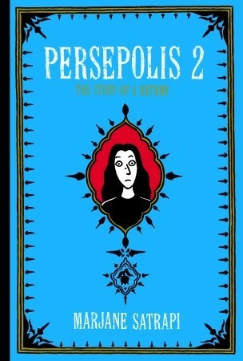

|  |
Persepolis 2: The story of a return by Marjane SatrapiThe fascinating continuation of the best-selling Persepolis, “one of the freshest and most original memoirs of our day”. In 1984, Marjane flees fundamentalism and the war with Iraq to begin a new life in Vienna. Once there, she faces the trials of adolescence far from her friends and family, and while she soon carves out a place for herself among a group of fellow outsiders, she continues to struggle for a sense of belonging. Finding that she misses her home more than she can stand, Marjane returns to Iran after graduation. Her difficult homecoming forces her to confront the changes both she and her country have undergone in her absence and her shame at what she perceives as her failure in Austria. Marjane allows her past to weigh heavily on her until she finds some like-minded friends, falls in love, and begins studying art at a university. However, the repression and state-sanctioned chauvinism eventually lead her to question whether she can have a future in Iran. As funny and poignant as its predecessor, Persepolis 2 is another clear-eyed and searing condemnation of the human cost of fundamentalism. In its depiction of the struggles of growing up—here compounded by Marjane’s status as an outsider both abroad and at home—it is raw, honest, and incredibly illuminating. Quotes:
|